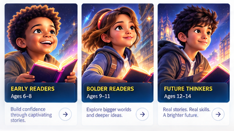
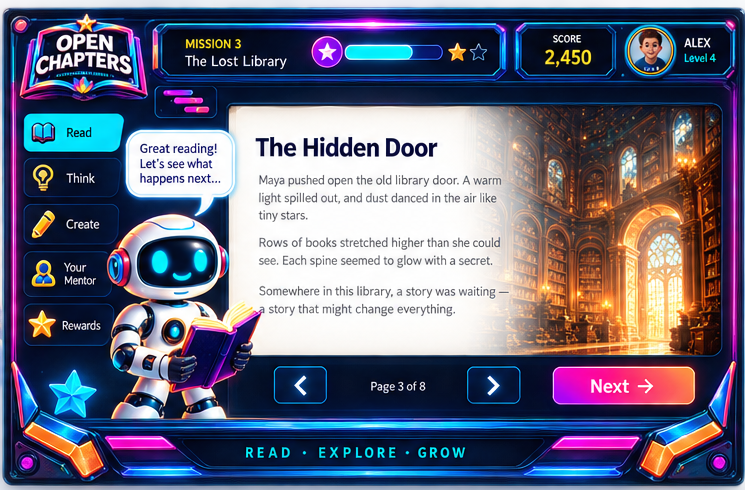

Longer stories
Enough narrative depth to sustain attention and discussion.
PROGRAMME DETAIL
For readers ready for longer stories, deeper comprehension and more independent thinking.

Enough narrative depth to sustain attention and discussion.
Meaning, inference, vocabulary and evidence.
The learner explains what they think and why.
Conversation strengthens understanding without taking over.

INSIDE A SESSION
The reading surface is deliberately calmer than the cabinet surrounding it. This keeps excitement and legibility from competing.
Experience the lesson →